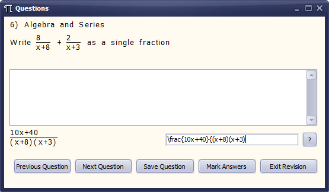

Maths Revision Tool
DateSeptember 2015 - April 2016
RoleSolo Project
TechnologiesPascal, Delphi
DescriptionThe Maths Revision Tool is a program I developed in my second year of college to help students revise. The maths in this program is based on the second year of an A-Level maths course but some of the questions may be slightly easier or harder depending on the topic chosen to revise. There are thousands of possible questions generated by the program to help you revise. I could not find a better tool than this while programming it!

Features
- Random question generation on eight different topics
- Questions marked immediately by the program
- LaTeX implementation or buttons to enter equations
- User accounts
- Statistics and topic recommendations
- Ability to print maths worksheets
Questions
This program was developed as part of my A2 Computing coursework, I needed to create a real program for a real person so developed this Maths Revision Tool for my friend.
The written part of my coursework (with sensitive details removed) can be found by clicking here, or here for the user manual. If you are doing coursework for a computing or computer science course please do not plagarise my work, however I have made the source code available on GitHub here.
The Maths Revision Tool was developed in Delphi, with an IDE I can only use at college (meaning no all-nighters were pulled in the making of this program).
All instructions on how to use the Maths Revision tool can be found in the user manual by clicking here. I do have a contact page on the site if you have questions you simply cannot find the answer to.
Yes, feel free to use any parts of my code in any of your projects, but please credit me in your work for any parts that you do use (Curtis Thompson). Remember that if you are using parts of the code for coursework at school, college or university you will be disqualified for not crediting me (or the authors of any other code that you use) as it is plagiarism. But I have no problem with you using it.
There are several things I would like to change if I could go back to them...